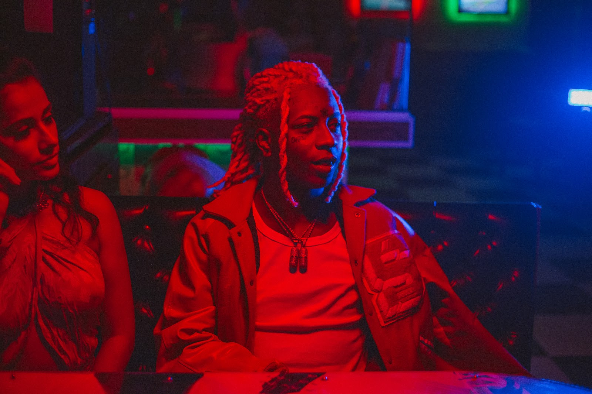

Biografia
Marcos Vinícius Albano, conhecido como Yunk Vino ⛓ é natural de Carapicuíba, SP. Nascido em 7 de junho de 1997, (25 anos) Vino começou sua carreira musical em 2018 de forma bem independente. Suas maiores inspirações no rap são Young thug, Lil Gotit, Travis Scott, Lil Keed, Future, Yung Bans, Guap Tarantino, entre outros.
Em 2019 ele abriu um show do Racionais em Curitiba ao lado do rapper AKA RASTA. Em 2020 ele entrou para o cast do selo musical Labbel Records e em fevereiro deste mesmo ano ele lançou seu primeiro trabalho 237 e em junho ele lançou a versão 237 Deluxe. Hoje seu canal no Youtube soma mais de 16 milhões de visualizações. Yunk Vino é um dos nomes mais reconhecido do Trap nacional atualmente.
Abaixo teremos o videoclipe de seu mais recente lancamento, Miami Vice
Obrigado por ter lido ate aqui!